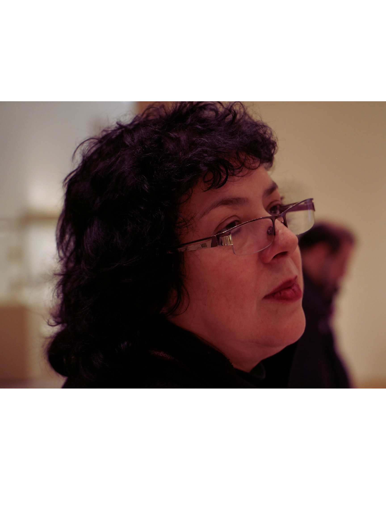
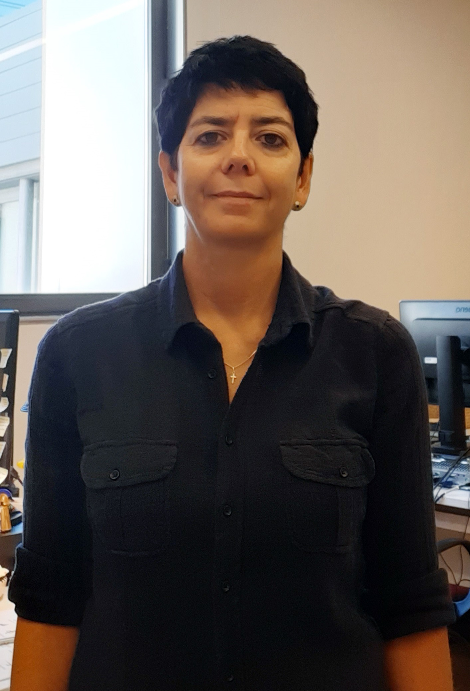

Conferencias Magistrales
Figuras consagradas de la filología clásica, la iconografía vascular y los estudios de género invitadas a inaugurar, mediar y clausurar el diálogo del congreso.

Magistral InauguralElsa Rodríguez Cidre
UBA / CONICET • Argentina
Agencias femeninas trágicas: algunos ejemplos euripideos
Ángela María Carmona Barón
Javeriana / Utadeo • Colombia
Entre textiles y otros textos: pasajes de la obra homérica y un puñado de mujeres maquinadoras

Conferencia Intermedia 2Margarita Moreno Conde
MAN Madrid • España
Guardianas de la memoria. Las mujeres ancianas en las imágenes de los vasos griegos
 Magistral de Clausura
Magistral de Clausura
Elena Giusti
University of Cambridge • Reino Unido
Dido’s Voice
Presentación en inglés; la transmisión por Zoom contará con subtítulos en español.
Programa General del Congreso
Actualización del 22 de octubre de 2026 · Descargar programa actualizado
Haz clic en cualquier bloque o mesa para consultar las salas, aforos, la persona que modera y las pestañas con las ponencias y resúmenes.
| Lunes 9 | Martes 10 | Miércoles 11 | Jueves 12 | Viernes 13 |
|---|
Directorio de Ponentes y Participantes
Conoce a las investigadoras y ponentes que integran las mesas del congreso, sus líneas de trabajo y los resúmenes de sus comunicaciones.
Líneas Temáticas & Comité Organizador
Conoce los 6 ejes temáticos del congreso coordinados por las investigadoras de Desde Themyscira. Haz clic en el nombre de cada responsable para desplegar su fotografía y breve semblanza académica.
Agencia femenina en (y a través de) los textos literarios
análisis de la agencia y figuras femeninas en la literatura antigua, así como sus procesos de transmisión, conservación y estudio; las mujeres como críticas, eruditas y estudiosas.
Mujeres, poder y participación en la vida pública
división entre lo privado y lo público en la Antigüedad clásica, ya que las prácticas en estos ámbitos permiten examinar la manera en que las mujeres negociaron el espacio social y político por vías distintas a las de la institución gobernante.
Cuerpo, sexualidad y control social
análisis del cuerpo femenino como espacio simbólico, político y social, así como de la sexualidad, el matrimonio y la maternidad como ámbitos de control, negociación y ejercicio de la agencia de las mujeres.
Filosofía antigua y construcción de lo femenino
la recuperación de pensadoras y mujeres filósofas de la antigüedad, los problemas por ellas planteados, su pensamiento, sus ideas y los conceptos afines a su desarrollo intelectual.
Agencia creativa
plataforma de análisis para dialogar sobre la capacidad de las mujeres de producir, transmitir y resignificar conocimientos y elementos simbólicos, discursivos, artísticos o materiales, desde la autoría individual o de manera subalterna e indirecta.
Metodologías y enfoques teóricos
propuestas teórico-metodológicas de género o feministas que resaltan la manera en que las mujeres hicieron cambios en sus circunstancias particulares o sociales: reacciones o actuaciones en realidades con condicionantes patriarcales.


Diseño Oficial, Cartel, Identidad Visual y Desarrollo Web
Concepción estética de la identidad gráfica, diseño editorial del cartel oficial y arquitectura de la aplicación web del congreso.

Formulario de Registro al Evento
Solicita tu registro y genera tu credencial con folio y QR después de confirmar el guardado en la hoja del comité. Al confirmar tu registro se intentará enviar el acceso a Zoom al correo que indiques.
Congreso Desde Themyscira 2026
Asistente Registrado(a):
Institución:
Modalidad:
Folio de Registro:
Presenta este código en acceso
Sala F, Salón de Actos (FFyL) o Biblioteca Nacional.
9 al 13 de Noviembre, 2026
Sedes del Congreso
Los eventos presenciales se llevarán a cabo en Ciudad Universitaria (FFyL y Biblioteca Nacional). Conoce las especificaciones de cada sala.
Sala F
Sede de la Inauguración, la Conferencia Magistral Inaugural y las Mesas 1 y 2 del lunes; también de la Conferencia Magistral de Elena Giusti y la Mesa 9 del viernes.
Salón de Actos
Recinto principal de alta capacidad en la Facultad de Filosofía y Letras para las Conferencias Magistrales del martes y miércoles, así como las Mesas 3, 5 y 8.
Biblioteca Nacional
Sede especial durante la mañana del Jueves 12 de noviembre para la Plenaria 1 y la Mesa 7 (Sala Interactiva del Departamento de Informática, 4º Piso).
Sala E & Sesiones Zoom
La Sala E albergará la Plenaria 2 y la Clausura del viernes. Todas las actividades cuentan con transmisión por Zoom y las Mesas 4 y 6 son exclusivamente virtuales.